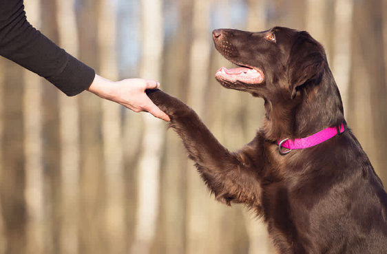
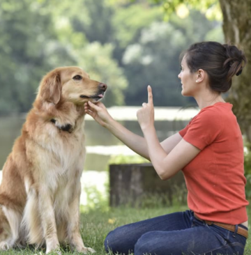
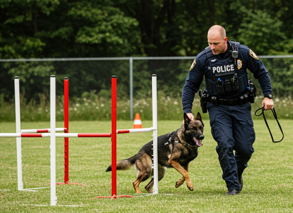
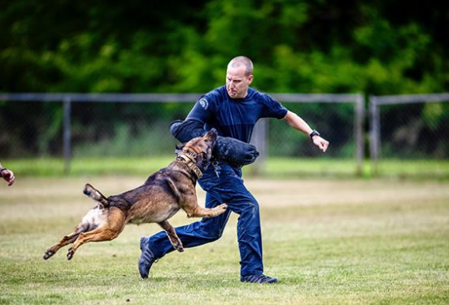

Puppy Training
Our puppy training programme helps young dogs develop good habits from an early age.
- Basic commands
- Socialisation
- House manners
- Leash training
Training programmes designed to help dogs learn, grow and thrive.

Our puppy training programme helps young dogs develop good habits from an early age.

Learn essential commands and improve your dog's behaviour in everyday situations.

For dogs that have mastered basic commands and are ready for more advanced training.

Support for owners who need help addressing unwanted behaviours.
Puppies can start learning basic commands from a young age. Training is adapted to their age and development.
Training duration depends on your dog's age, behaviour and consistency of practice.
Yes! We offer advanced training to help dogs develop more complex commands and improve their obedience.